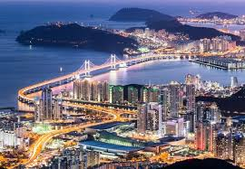
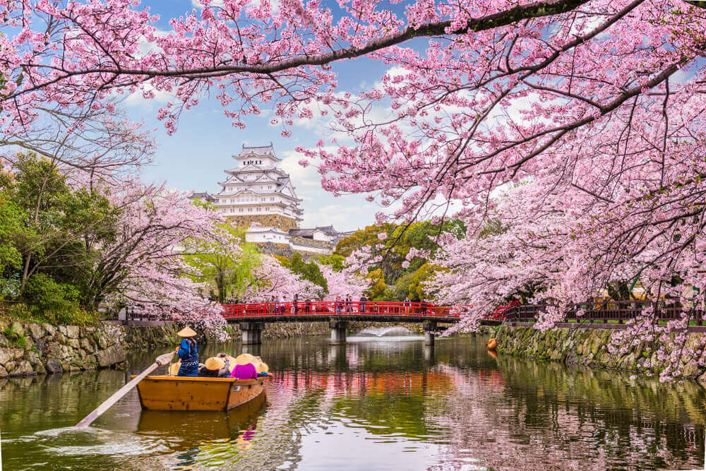
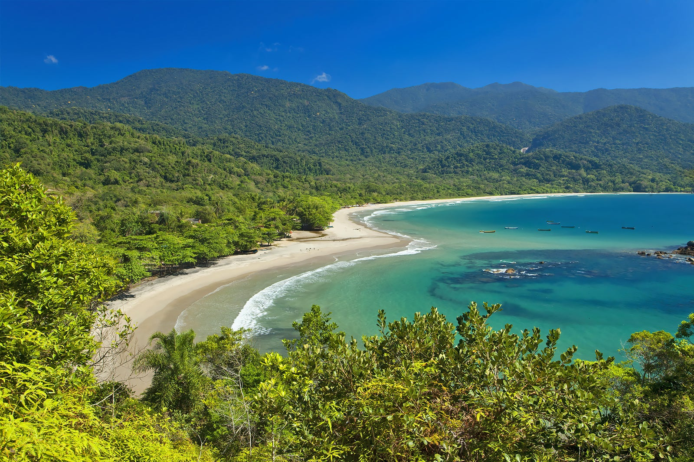

| Local | Descrição | Comprar |
|---|---|---|
|  | Seul, a capital da Coreia do Sul, é uma grande metrópole onde arranha-céus, metrôs de alta tecnologia e a cultura pop se misturam com templos budistas, palácios e mercados de rua. Entre as atrações de destaque, estão o futurista Dongdaemun Design Plaza, um salão de convenções com arquitetura curvada que tem um parque no telhado, o Palácio Gyeongbokgung, que já teve mais de 7.000 quartos, e o templo Jogyesa, local que abriga leguminosas e pinheiros antigos |
|
|  | O Japão, país insular no Oceano Pacífico, tem cidades densas, palácios imperiais, parques nacionais montanhosos e milhares de santuários e templos. Os trens-bala Shinkansen conectam as principais ilhas: Kyushu (com as praias subtropicais de Okinawa), Honshu (onde ficam Tóquio e a sede do memorial da bomba atômica de Hiroshima) e Hokkaido (famosa como destino para a prática de esqui). Tóquio, a capital, é conhecida por seus arranha-céus e lojas e pela cultura pop. |
|
|  | Ilhabela é um dos únicos municípios–arquipélagos marinhos brasileiros e é localizado no litoral norte do estado de São Paulo. |